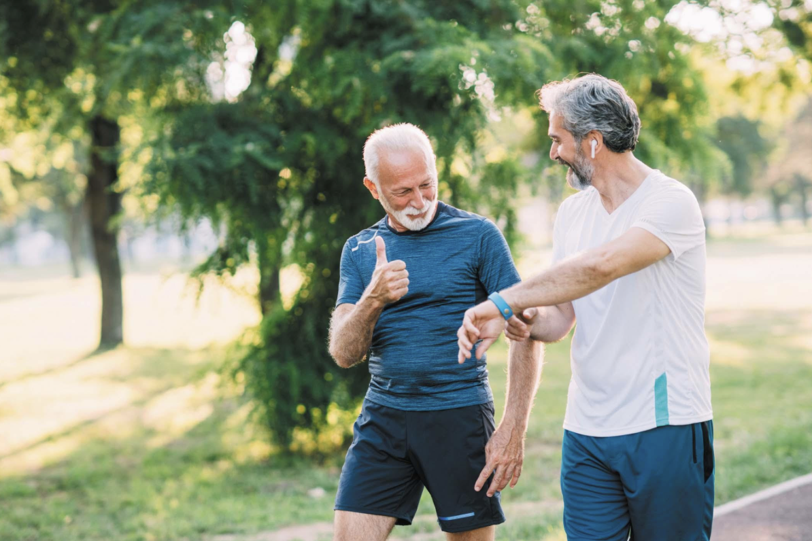
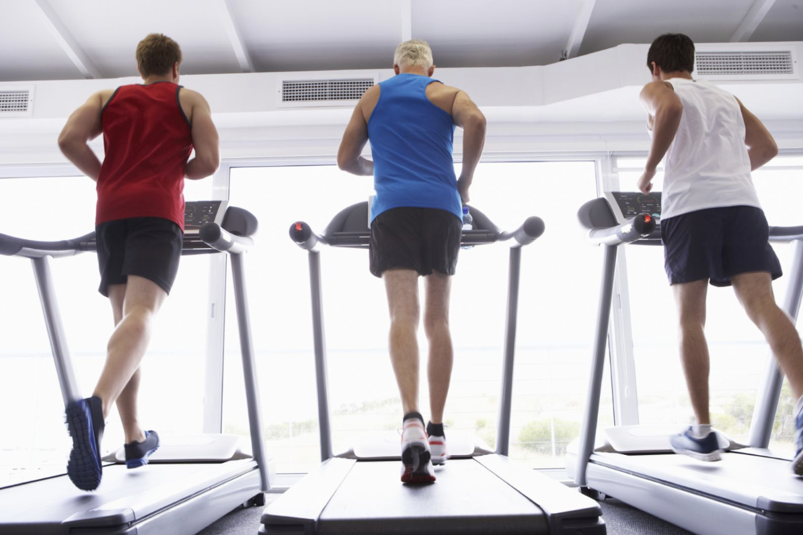

Exercise and fitness are essential components of a healthy lifestyle, contributing to physical, mental, and emotional well-being.
Regular physical activity helps prevent chronic diseases, improves heart health, and enhances overall bodily function.
Additionally, engaging in fitness activities promotes mental clarity, reduces stress, and boosts mood through the release of endorphins.
Fitness routines can be customized to suit individual preferences, ensuring inclusivity and long-term sustainability.
An active lifestyle also supports better sleep patterns and fosters increased energy throughout the day.
By incorporating both strength training and cardiovascular exercises, individuals can achieve a balanced approach to physical fitness.
Ultimately, exercise is a powerful tool for living a longer, healthier, and more fulfilling life.

In conclusion, exercise and fitness play a pivotal role in shaping a healthier, happier life.
They not only improve physical strength and endurance but also contribute significantly to mental resilience and emotional stability.
Embracing regular fitness routines empowers individuals to take control of their well-being and make lasting lifestyle changes.
The versatility of exercise options ensures that everyone, regardless of age or ability, can find activities that resonate with their goals and interests.
Over time, consistent physical activity fosters self-discipline, boosts self-confidence, and cultivates a sense of achievement.
It also strengthens the immune system, reducing vulnerability to illnesses and enhancing overall vitality.
Beyond personal benefits, an active lifestyle often inspires others, creating a ripple effect of positivity within communities.
As exercise becomes a regular part of life, it transforms into a source of joy and empowerment rather than a chore.
By prioritizing fitness, individuals unlock their potential to lead longer, more vibrant lives.
In a world where health is often taken for granted, committing to regular exercise is a profound investment in both the present and future.